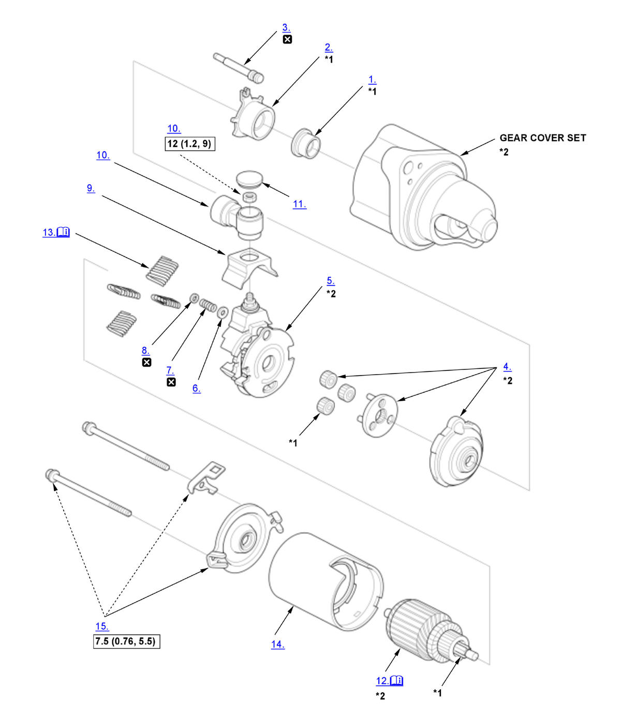

Starter Overhaul (K20C1) (2017 2018 2019 2020 2021): Reassembly: Procedure
NOTE:
Numbered call-outs in figure pertain to list numbers in following procedure.
Fig 1: Exploded View Of Starter Components With Torque Specifications For Reassembly (K20C1 - 2017-21)

Courtesy of HONDA, U.S.A., INC. |
Detailed information, notes, and precautions |
 |
Torque: N.m (kgf.m, lbf.ft) |
 |
Replace |
| *1 | Do not wipe off the special grease applied. |
| *2 | These parts have inspection items. |
- Gear Plunger - Install
- Switch Plunger - Install
- Switch Shaft - Install
- Planetary Gear Assembly - Install
- Brush Holder Assembly - Install
- Moving Contact - Install
- Contact Spring - Install
- Push Nut - Install
- Switch Cover - Install
- Terminal - Install
- Terminal Cap - Install
- Armature - Install
NOTE: To seat the new brushes, slip a strip of #500 or #600 sandpaper, with the grit side up, between the commutator and each brush, and smoothly turn the armature. The contact surface of the brushes will be sanded to the same contour as the commutator.
- Brush Spring - Install
1. While squeezing a spring (A), insert it in the hole on the brush holder, and push it until it bottoms. Repeat this for the other three springs (B, C, and D). - Armature Housing - Install
- End Cover - Install